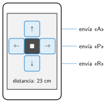

Manejar el robot desde el móvil
🤔 Pienso5 min
Qué hago aquí: Piensa un momento y contesta con lo que ya sabes. No pasa nada si no lo sabes: es para empezar.
Dibuja el mando de una videoconsola. ¿Para qué sirve cada botón?
✏️ Puedes responder escribiendo, con un dibujo o un esquema, o contándolo en voz alta.
📖 Leo y aprendo15 min
Qué hago aquí: Lee despacio, mira los dibujos y los ejemplos, y quédate con la idea clave del final.
El móvil tiene Bluetooth y pantalla táctil. Con una aplicación, se convierte en un mando para el robot.

Algunas aplicaciones: Makeblock (para el mBot) y Micro:Bit (para la placa).
Una buena pantalla tiene pocos botones, grandes y separados. Cada botón hace una sola cosa. Su dibujo dice qué hace: una flecha, un cuadrado para parar.
✏️ Hago25 min
Qué hago aquí: Haz las actividades en orden. Empieza siempre por las básicas.
Ordena del 1 al 4: el robot recibe «A» · tocas el botón · los motores giran · la aplicación envía «A».
Empareja el móvil con el robot. Manéjalo entre dos sillas, ida y vuelta. ¿Cuánto tardas?
Completa el protocolo de tu robot.
| Letra | Orden | Letra | Orden |
|---|---|---|---|
Dibuja la pantalla de una aplicación para tu robot. Escribe qué letra envía cada botón.
¿Qué es mejor para manejar el robot: el móvil o el mando de infrarrojos? Da una razón.
✏️ Puedes responder escribiendo, con un dibujo o un esquema, o contándolo en voz alta.
🚀 Amplío (si quieres saber más)
Qué hago aquí: ¿Has terminado? Lee la curiosidad o elige el reto. Es voluntario.
Inventa una función nueva: por ejemplo, que el móvil vibre si el robot está cerca de una pared. ¿Qué mensajes van del robot al móvil?
✅ Compruebo5 min
Qué hago aquí: Contesta sin mirar la ficha y marca cómo lo llevas.